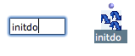
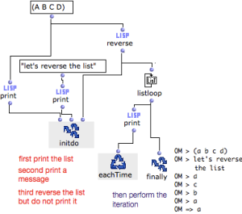

OpenMusic DocumentationHiérarchie de section : OM 6.6 User Manual > Visual Programming II > Iterations: OMLoop > Evaluators > Initdo
OpenMusic DocumentationHiérarchie de section : OM 6.6 User Manual > Visual Programming II > Iterations: OMLoop > Evaluators > Initdo
Navigation : page précédente | page suivante
Attention, votre navigateur ne supporte pas le javascript ou celui-ci à été désactivé. Certaines fonctionnalités de ce guide sont restreintes.
Prior Evaluation(s) : Initdo
This evaluator can execute one or several operations prior to the iteration. It can be added as many optional inputs as necessary.
Optional Intputs
Adding the Box in the Editor
Contrary to EachTime and Finally, Initdo must be added in the editor by the user. To do so, Note that there can be only one Initdo box in the editor : the box can be added multiple optional inputs. Press |

|
Example : Modifying a List Before an Enumeration
We'll send a message and reverse our list before the iteration begins.

|
On the left, Initdo is called internally before the iteration starts. It performs three evaluations :
Then, the iteration starts : Listloop enumerates the items of the reversed list returned by reverse . EachTime and Finally return the results of the iteration.
|
Références :
Plan :
Navigation : page précédente | page suivante
A propos...(c) Ircam - Centre Pompidou